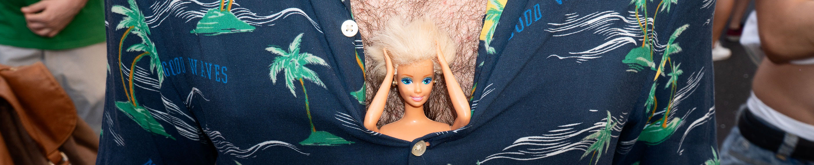

ABOUT
I always like to think that
my first approach with the
communication originated from mine
first digital machine, the
Nikon Coolpix. From that moment
I have not stopped recording and
show what I was doing. And maybe
this background that has me
pushed to continue my studies in
Communication design, where
I discovered and expanded horizons
cultural and above all visual.
The many projects I have
worked they allowed me to
improve soft skills, such as
teamwork.
My personal language
communicative is the reportage,
tell stories through one
organic series of photographs. For
this reason I was for two
e-reporter consecutive years for
Fuorisalone.it, telling the
Milan Design Week.
I also got to
tell about the "Food rule
of art ", being part of the staff
as a photographer and videomaker.
I collaborated as a videomaker
to some Design projects of the
Product, putting into practice
different techniques, from shooting up
to motion graphics.
I'm passionate about computer science,
in particular coding, which al
Polytechnic of Milan I succeeded
to deepen in different fields,
from site programming e
web app, until the development of
video games.